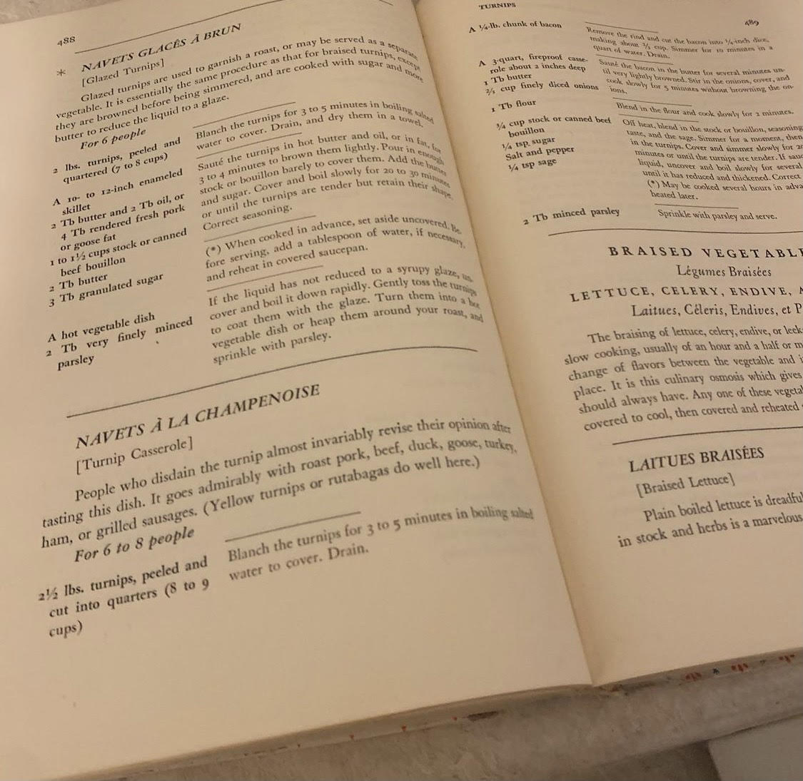

I found this one out of necessity, our garden produced too many turnips, and I needed a new way to cook them. So out came my first edition of "Mastering the Art of French Cooking" and we have ourselves a scrumptious turnip casserole rich and buttery and earthy as ever that also makes great leftovers as this dish lends itself well to reheating.
This recipe makes a regular casserole dish amount, good for about 4-6 people.
Blanch the turnips for 3-5 minutes in boiling salted water to cover. Drain.
Cut the bacon into 1/4 inch dices making about 2/3 cups. Simmer for 10 minutes in a quart of water. Drain, and save the water for a future soup or sauce.
Saute the bacon in the butter for several minutes until very lightly browned. Stir in the onions, cover, and cook slowly for 5 minutes without browning the onions, so until transluscent.
Blend in the flour and cook on low for 2-3 minutes, just enough to thicken.
Off heat, blend in the stock, seasonings to taste, and the sage. Simmer for a moment then fold in the turnips. Cover and simmer slowly for 20-20 minutes either on the stove top or in the oven at 375 F. If the sauce is too liquid consider cooking it uncovered for that time until it has reduced and thickened to your liking.
Sprinkle with parsley and serve!
